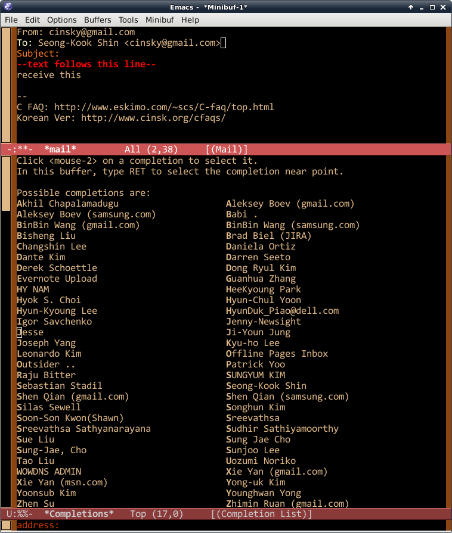

Emacs Mail Address Completion
I don't use Emacs for reading mails. All of my mail servers uses IMAP, and for productivity, Emacs as a mail client is too slow. It's kind of sad. However, sending e-mail in Emacs (M-x mail) speed up my daily work greatly. Normally, I discuss some code within Emacs, and for the reference, I send the code fragment or org file to the discussioners. ('discussioner' is not an English word. I don't know any word for it.)
The problem is, I usually don't remember mail address for people. Had I used graphical mail agent such as thunderbird or outlook, I would be pleased to see the auto-completion feature of them. But no such luck in Emacs. (Yes I know there are couple of Emacs packages that analyze mail boxes to extract the mail addresses, but none makes me comfortable enough. Those who want it anyway, see BBDB)
All I want is, to use my gmail contacts as address completing candidates.
So I wrote very simple Ruby script, to extract the contact information from my gmail account, and save it as contacts.el using following command:
$ cd $HOME/.emacs.d
$ ./gcontact.el MY-GMAIL-ACCOUNT@gmail.com
password: ********
$ _
Then add following code to your init script:
(defun complete-contact-address-internal ()
(let ((name (completing-read "address: "
my-google-contacts
nil 'confirm)))
(if (string-match "@" name)
name
(let ((found (assoc name my-google-contacts))
(nam (if (string-match "\\(.*?\\) *([^)]*) *$" name)
(match-string 1 name)
name)))
(format "%s <%s>" nam (cdr found))))))
(defun complete-contact-address (&optional arg)
(interactive "P")
(let ((address (complete-contact-address-internal))
(pos (point)))
(save-restriction
(save-match-data
(goto-char (point-min))
(re-search-forward (regexp-quote mail-header-separator)
(point-max) t)
(beginning-of-line)
(let ((header-sep (point)))
(if (>= pos header-sep)
(progn
(goto-char (point-min))
(re-search-forward "^To:" header-sep t))
(goto-char pos))
(beginning-of-line)
(if (or (re-search-forward "^[^[:blank:]][^:]*:[[:blank:]]*$"
(line-end-position) t)
(re-search-forward "^[[:blank:]]+$" (line-end-position) t))
(insert address)
(beginning-of-line)
(re-search-forward "[,[:blank:]]*$" (line-end-position) t)
(replace-match (format ", %s" address))))))))
(eval-after-load "sendmail"
'(progn
(define-key mail-mode-map [(meta return)] 'complete-contact-address)
(let ((contacts (concat (file-name-as-directory user-emacs-directory)
"contacts.el")))
(when (file-exists-p contacts)
(load-file contacts)))))
When writing e-mail in Emacs using M-x mail, press M-RET to auto-completing mail address.

Listing of gcontract.rb:
Comments
Comments powered by Disqus